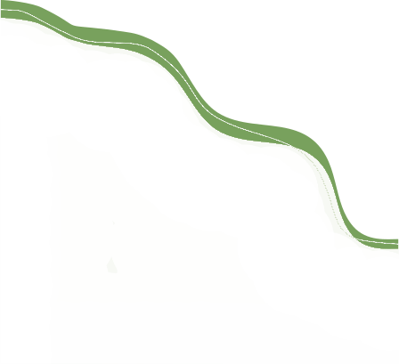
Rugiada è uno spazio di incontro, di condivisione e accompagnamento per le persone che hanno vissuto la tratta di esseri umani e altre situazioni di sfruttamento.
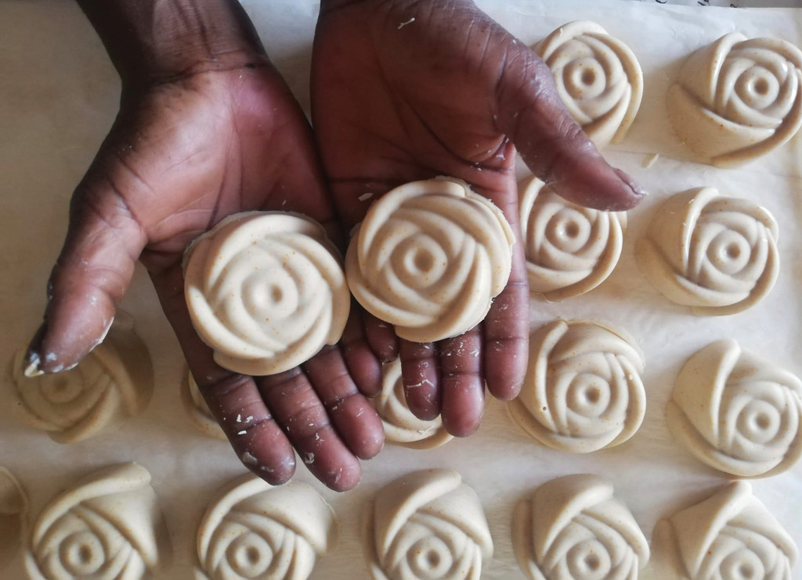
L’elaborazione di sapone artigianale si propone come parte di un processo
di guarigione inoltre alla possibilità di
generare risorse economiche di forma
creativa, per le persone stesse e per le altre attività che Rugiada offre: classe
d’italiano, laboratori per il rafforzamento
dell’autostima e della resilienza e l’appropriazione di strumenti finanziari,
comunicativi e artistici (Arte terapia).
In tutto questo, l’esperienza di una
spiritualità gioca un ruolo centrale.
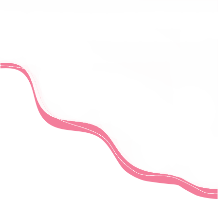
La preparazione del sapone è un’arte che richiede di tecnica, precisione, pazienza e creatività.
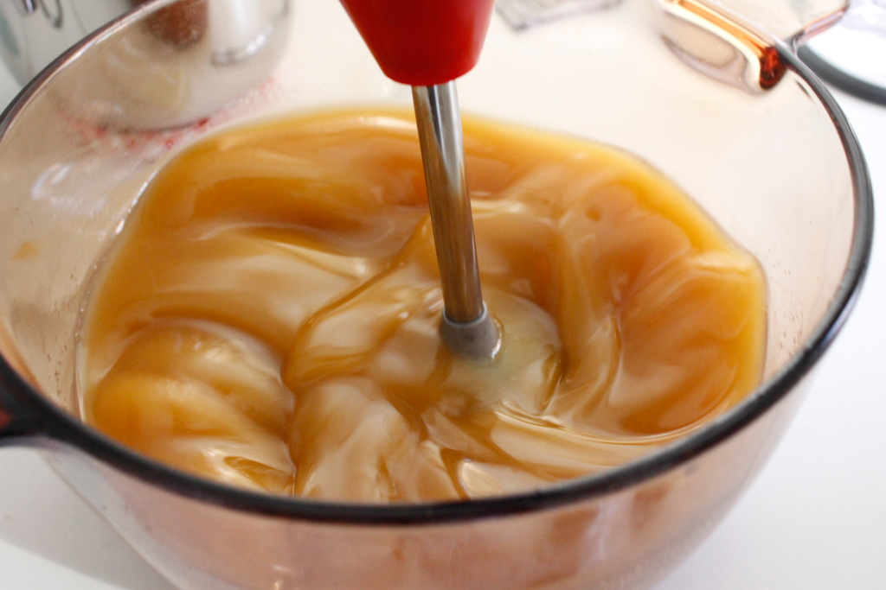
I saponi di Rugiada vengono elaborati con prodotti naturali, che li rende delicati alla pelle e attenti alla cura dell’ambiente.
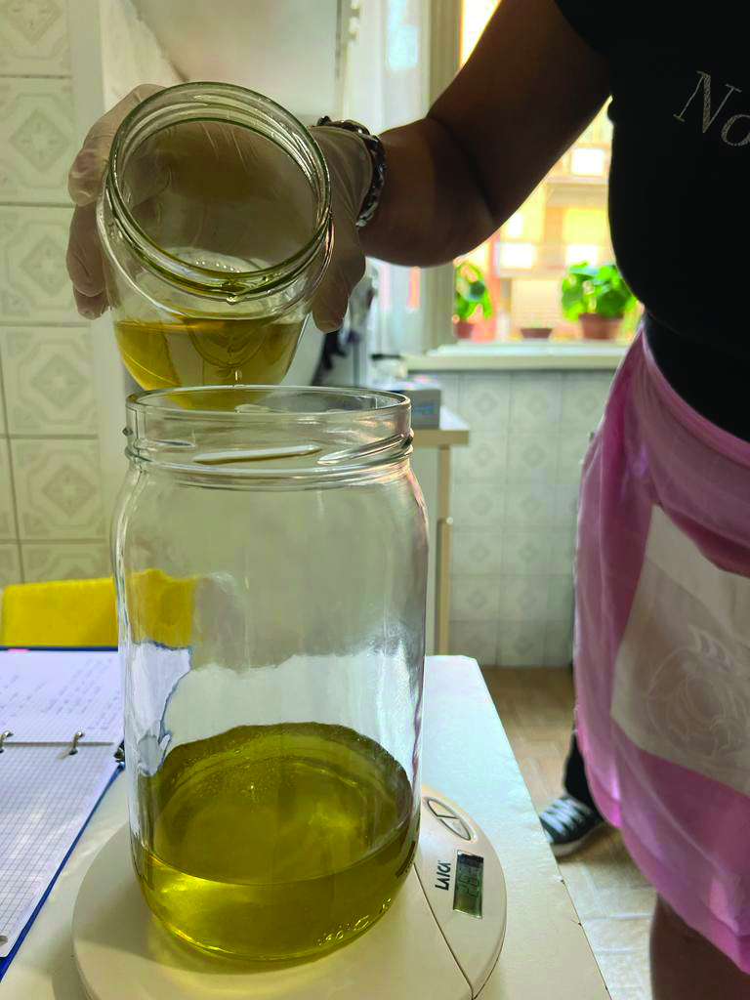
“La cura” è un elemento fondamentale sia nella preparazione del sapone, che nei “processi di guarigione”, intesi come cammini di trasformazione della vita delle persone che hanno vissuto situazioni di sfruttamento.
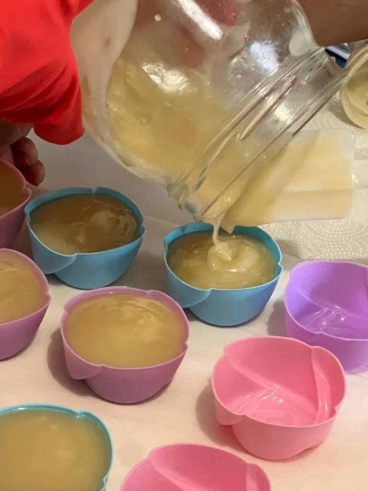
Sapone al Miele
A base di miele, cera d’api, burro di karité, olio di mandorle dolci, olio di oliva macerato in fiori di tarassaco e olio di cocco.
Sapone ricco in proprietà lenitive e antinfiammatorie.
Sapone alle Rose
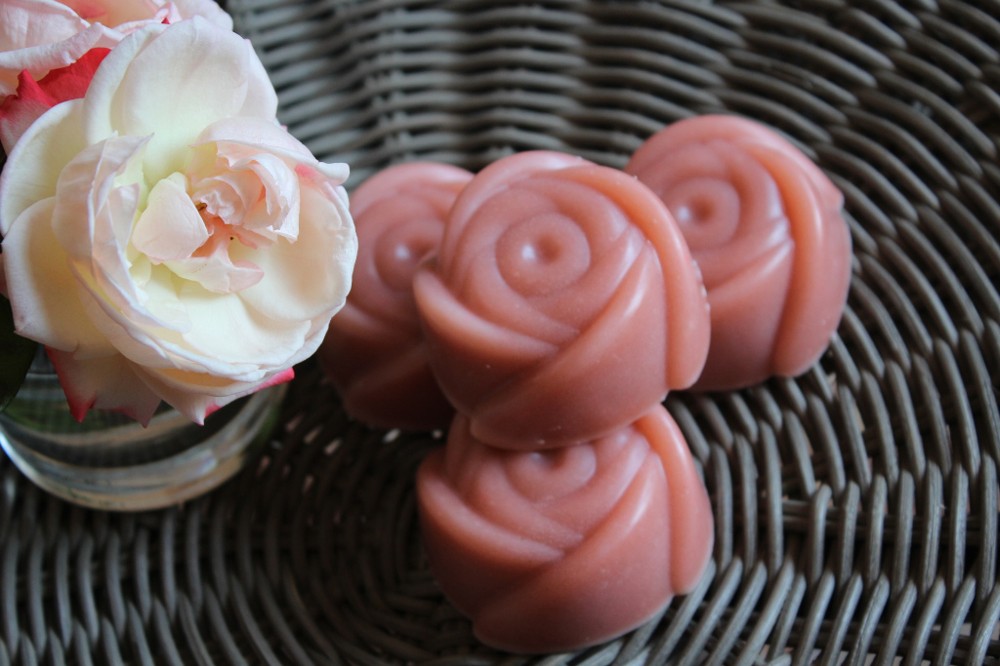
A base di olio di oliva, olio di cocco e olio di mandorle
dolci, che rende il sapone molto idratante e delicato.
Il suo colore rosa proviene dai petali di rose.
Sapone al burro di Karitè
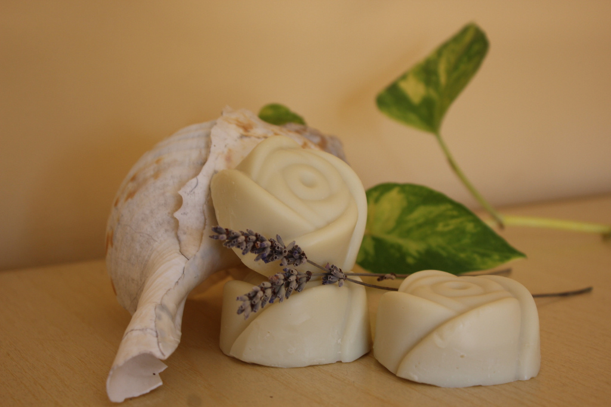
A base di olio di oliva, olio di mandorle dolci e olio di ricino. Con proprietà idratanti e nutrienti.
Cremoso e delicato. Indicato per pelli sensibili per l’azione emolliente e lenitiva del burro di Karitè.
Sapone all’Argilla verde
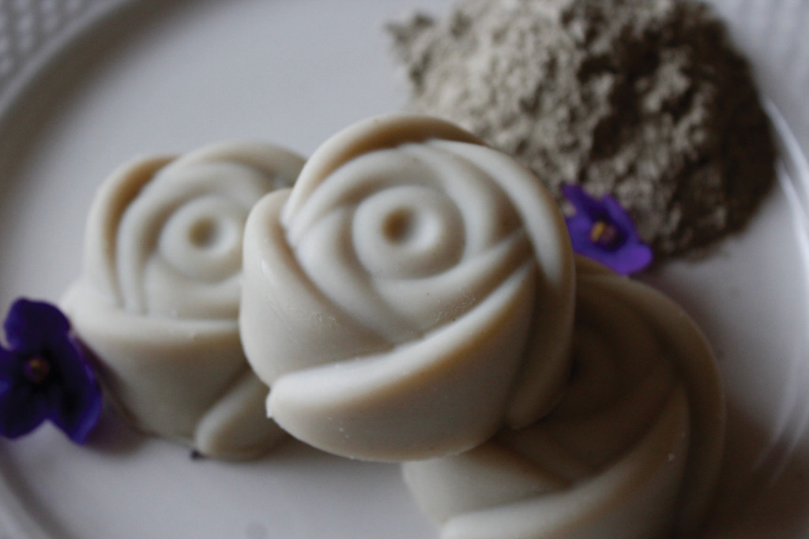
A base di argilla verde, olio di oliva,
olio di cocco e olio di mandorle dolci.
Indicato per la cura della pelle grassa e acneica,
con proprietà astringenti e cicatrizzanti.
Sapone alla Lavanda
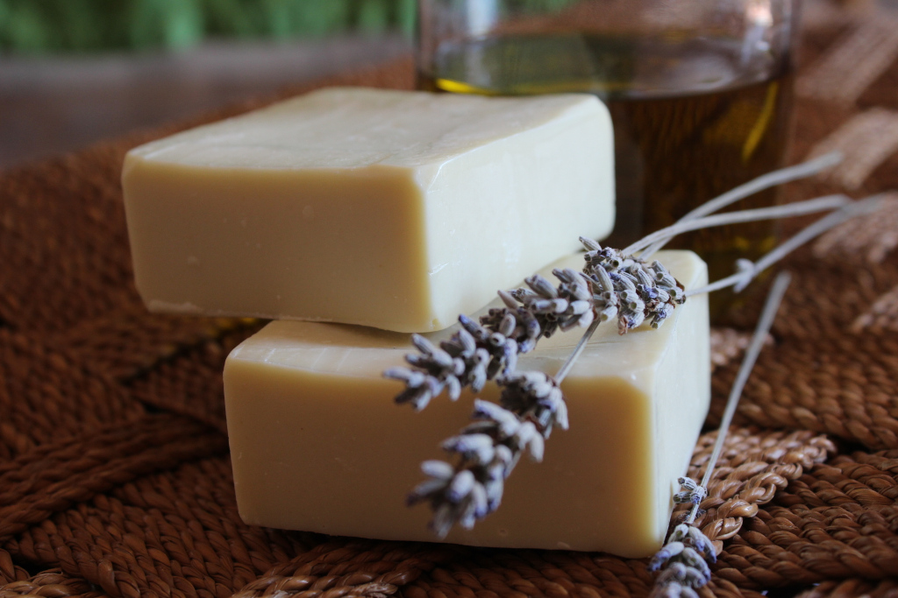
L’ingrediente principale è l’olio di oliva che rende il sapone molto delicato e nutriente, inoltre alle proprietà dell’olio essenziale di lavanda.
Sapone all’Aloe Vera
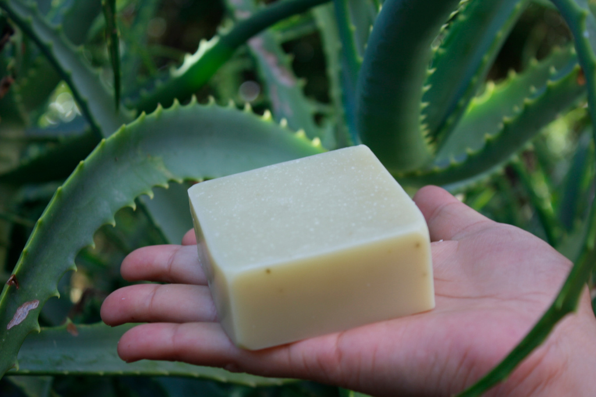
Contiene polpa di Aloe vera, burro di cacao e burro
di Karitè, olio di ricino, olio di oliva e olio di
cocco. Sapone idratante con proprietà lenitive.
Molto delicato per la pelle.
Sapone al Latte
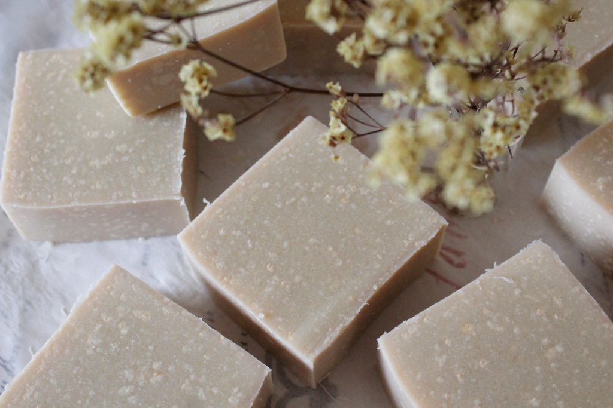
A base di olio di oliva e olio di cocco, che hanno azione idratante e nutriente.
Rende la pelle morbida come solo il latte può fare.